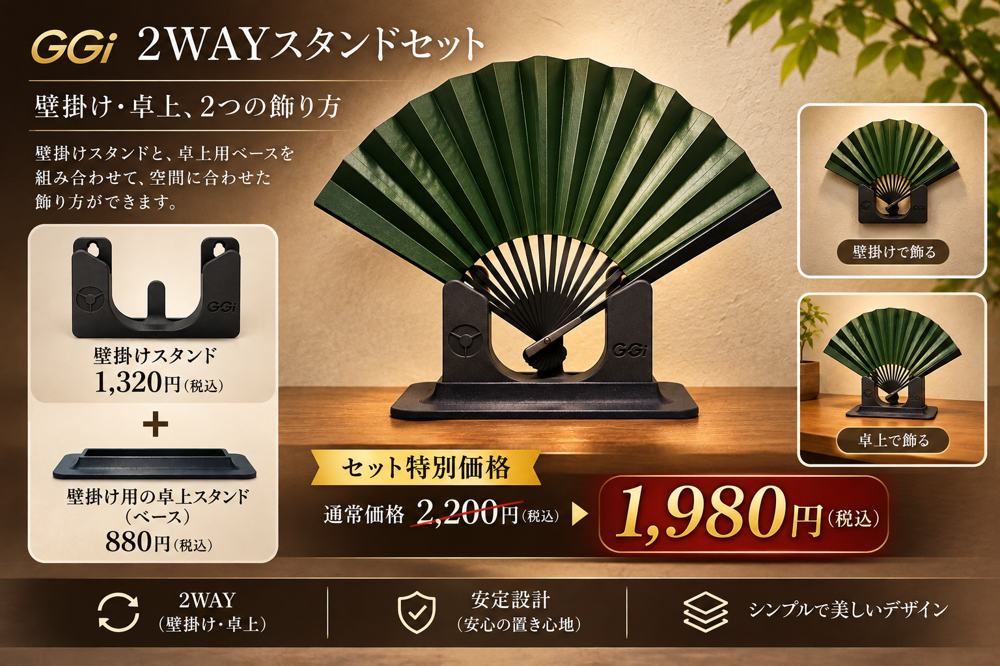
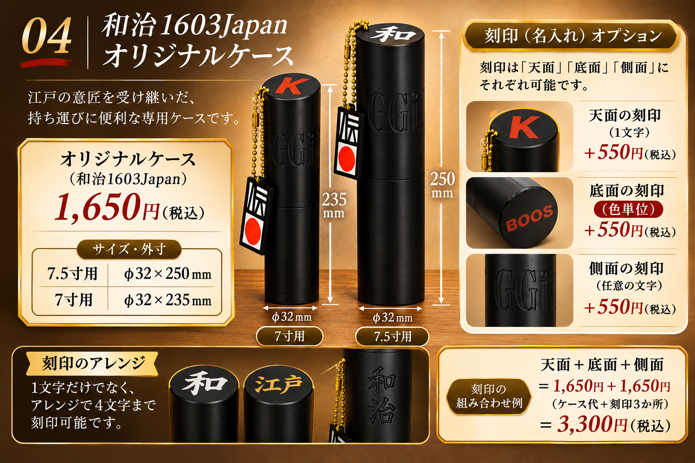
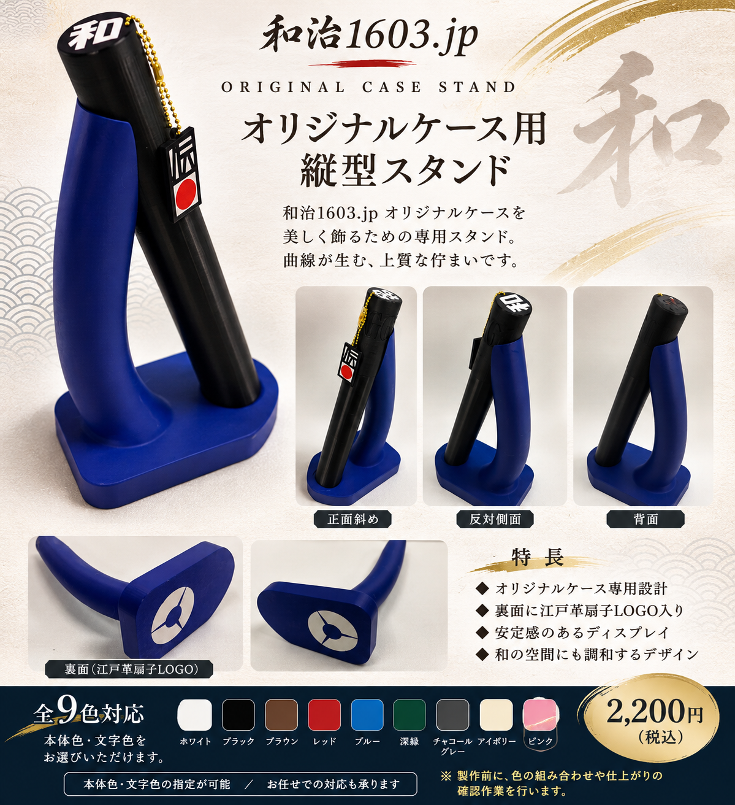

和治1603.jp オリジナル商品
一本の扇子から広がる、日本の美意識。伝統と現代のものづくりをつなぐ商品をご紹介します。
ORIGINAL PRODUCTS

01｜メーカー専用 縦型スタンド
江戸革扇子を美しく、上質に飾る専用スタンドです。
販売価格：2,200円（税込）
02｜簡易スタンド

シンプルなデザインで、扇子を手軽に飾れる卓上スタンドです。
オリジナルロゴ入り。
■ 標準カラー9色
和治1603.jpの標準カラー。
880円（税込）

03｜2WAYスタンド
壁掛けスタンドと専用ベースの組み合わせで、 壁掛け・卓上の2通りの飾り方ができます。
■ 販売価格
壁掛けスタンド単品：1,320円（税込）
卓上用ベース単品：880円（税込）
セット特別価格：1,980円（税込）
単品合計2,200円より220円お得
セットでも、単品でもお求めいただけます。

04｜和治1603Japan オリジナルケース
和治1603Japan オリジナルケース。 サイズは7.5寸用と7寸用の2種類です。
■ ケース本体
7.5寸用：外径φ32 × 全長250mm
7寸用：外径φ32 × 全長235mm
本体価格：1,650円（税込）
■ 刻印オプション
天面：1文字 ＋550円（税込）
底面：色単位 ＋550円（税込）
キャップ側面：＋550円（税込）
天面・底面への文字入れに対応。
アレンジにより4文字までの表現も可能です。
キャップ側面にも刻印できます。
※各箇所の刻印は、それぞれ550円（税込）です。
※刻印の組み合わせや仕様についてはお問い合わせください。

05｜和治1603.jp オリジナルケース用 縦型スタンド
和治1603.jp オリジナルケースを
美しく飾るための専用スタンドです。
曲線を生かしたデザインで、
空間に上質な佇まいを演出します。
裏面には江戸革扇子のオリジナルLOGO入り。
■ カラーバリエーション
全9色対応。
本体色・文字色をそれぞれ指定できます。
お任せでの製作にも対応いたします。
■ オーダーについて
ご希望の色や文字の組み合わせについて、
製作前に確認作業を行います。
内容をご確認いただいた後、製作いたします。
2,200円（税込）
COLOR & PRODUCT INFORMATION
■ カラーバリエーション
各商品は標準カラー9色からお選びいただけます。
本体色・文字色を指定できる商品は、
それぞれご希望の色をお知らせください。
色の組み合わせをお任せいただくことも可能です。
No.01 ホワイト
No.02 ブラック
No.03 ブラウン
No.04 レッド
No.05 ブルー
No.06 深緑
No.07 チャコールグレー
No.08 アイボリー
No.09 ピンク
■ オーダーについて
ご希望の色や文字の組み合わせについて、
製作前に確認作業を行います。
内容確定まで、数回メールで
やり取りさせていただく場合があります。
内容をご確認いただいた後、製作いたします。
■ 製品について
当商品は3Dプリンターを使用して製作しています。
量産品とは異なり、積層痕や表面の凹凸、
色合いなどに個体差が生じる場合があります。
一つひとつ製作する商品の特性をご理解ください。
仕上がりの微細な違いが気になる方は、
ご購入をお控えください。
■ 素材について
使用材料は、トウモロコシ由来の原料を使用した PLA系フィラメントです。
■ ご使用・保管上の注意
・直射日光の当たる場所を避けてください。
・高温になる場所に置かないでください。
・高湿度の環境での保管は避けてください。
・長時間の紫外線により変色する場合があります。
■ ご購入にあたって
受注製作品のため、お客様都合による返品・交換は
原則としてお受けしておりません。
初期不良や商品違いなどの場合は、
お問い合わせください。
ORDER & CONTACT
既製品のご購入はこちら
既製品の購入サイト和治1603.jp オリジナル商品の見積もり・お問い合わせ
メールでお問い合わせメール：kazuhau2027@gmail.com
お支払い方法
ゆうちょ銀行へのお振込みとなります。
振込先はご注文確定後にご案内いたします。
発送方法
発送方法・送料はご注文内容に応じてご相談となります。